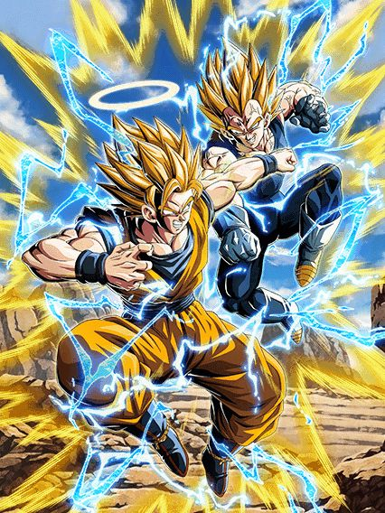

DATA DE LANÇAMENTO: 18/03/2026
Basicamente a mesma coisa que o lado Majin Vegeta do Card 😭
O Goku tem um kit bem similar ao do Majin Vegeta, com a grande diferença sendo ele ser um Card de desvio e suporte ao invés de um tank
A restrição de aliados dele só precisa de 4 personagens Super Class no time, mas ele precisa pegar 8 orbs se não tiver esses personagens, sendo pior que os 7 orbs do Vegeta
Uma coisa interessante desse lado do Card é que ele também stacka ATK e DEF, então você vai fortalecer ambos lados do Card, independente de qual lado você escolher
Em geral, a ideia desse Card é genial, mas as restrições me incomodam bastante
Se é uma dupla, eu quero usar os dois lados do Card, não ficar restrito em um só.
Nota dos Links:
10/10
Nota das Categorias:
10/10

Reversible Exchange
Majin Vegeta + Super Saiyan 2 Goku (Angel)
Você chegou ao fim dessa página!
Obrigado por ler tudo, e fica a vontade pra ver outras